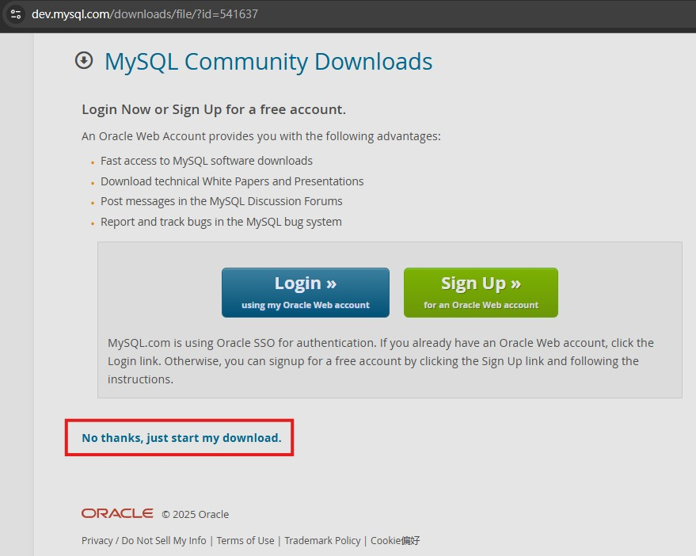
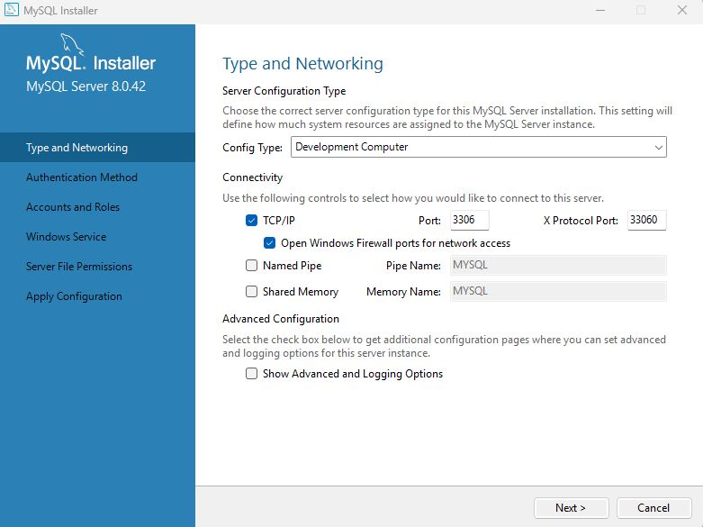
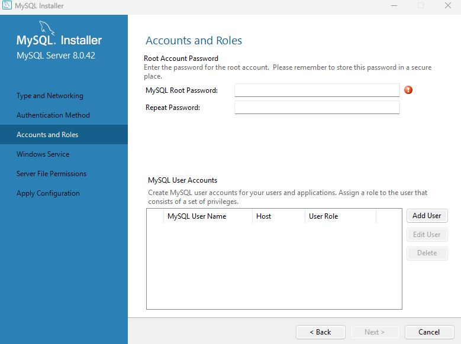
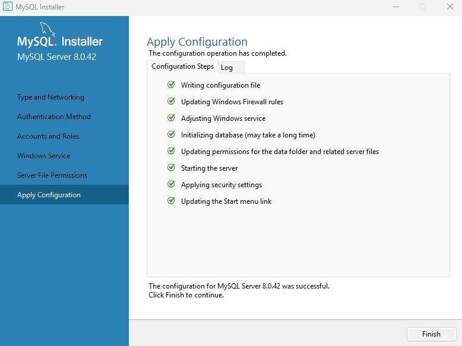
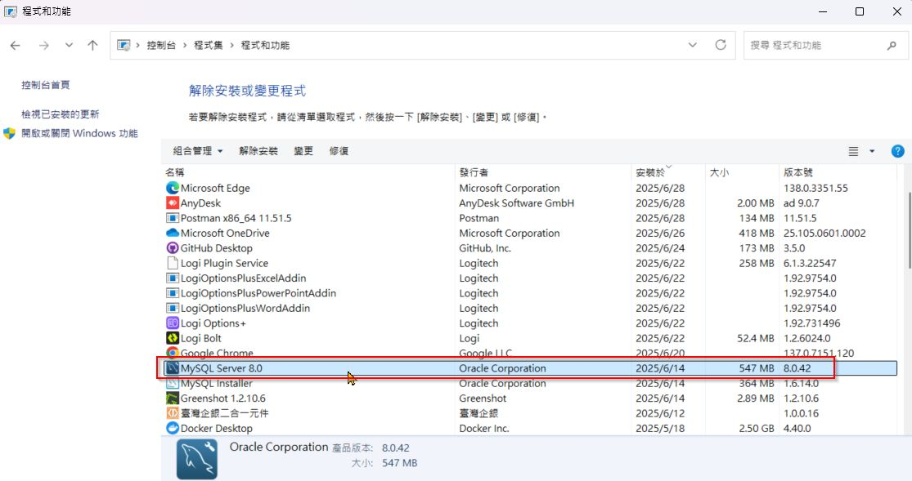

SQL
Mysql
comments powered by Disqus
安裝mysql教學
下載
前往下載網址
選擇版本和下載點
選擇最新版本，選擇第二個下載點

直接下載
這時畫面上會出現 Login 和 Sign Up 按鈕，
直接無視，
點擊下面的 No thanks, just start my download. ，直接下載即可~

安裝
執行安裝檔
雙擊 mysql-installer-community-xxx.msi 檔案，
 按 Execute，接下來一直按 Next，
按 Execute，接下來一直按 Next，
預設 port 3306，按 Next，

設定一組密碼，記得要記住哦，重要!

接下來一直按 Next，最後按 Execute 就完成囉

確認是否安裝成功
控制集 > 程式集 > 程式和功能 
加入環境變數
步驟：
- 右鍵點選「本機」 →「內容」
- 點選左側「進階系統設定」
- 在「系統內容」中，點選「環境變數」
- 在「系統變數」中，找到並點選「Path」→ 點選「編輯」
- 點選「新增」，貼上：
YourPath\MySQL\MySQL Server 8.0\bin
- 按「確定」儲存並關閉所有視窗

關閉並重新開啟 CMD 或 PowerShell，輸入：
mysql -u 你的帳號 -p
再輸入密碼，
如果成功，會顯示 MySQL 版本號。

下載 MySQL Workbench
因為 MySQL 本身無提供清晰明確的介面去操作，所以需要下載 MySQL Workbench 來方便我們使用，
前往 MySQL Workbench，
點擊 Download Now